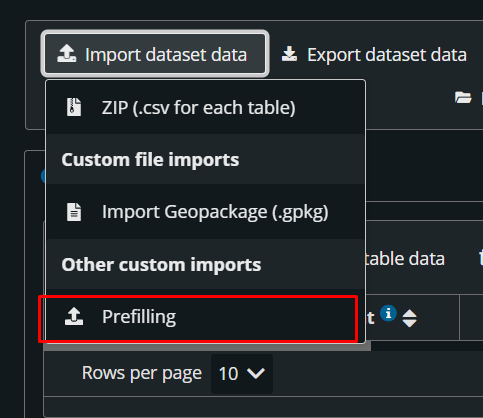
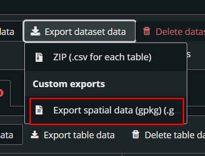
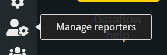

Getting started with a WFD dataflow#
This section describes the most common issues and best practices for working with a dataflow. It also outlines the recommended approach to start working on a new reporting dataflow.
Start with the dcMetadata table#
The first thing you should do when starting to work on a new dataflow is to check the Help page in the dataflow. There you will find all relevant material for reporting, including templates, guidance and technical documentation.
It is preferable to start working with the dcMetadata table Go to Good practices
This table contains key configuration values that can impact validation rules and the overall reporting process. Reviewing and completing it early helps avoid validation errors later in the workflow.
Prepare the reporting data#
When preparing reporting data, you have three main options:
Use the official template (recommended) You can prepare your data locally using the official template and then import it into the system.
Upload data using CSV (not recommended) You can upload data using CSV files. However, this approach is not recommended, especially for spatial datasets, as it may lead to formatting issues, schema inconsistencies and validation errors.
Use the Prefilling Tool (recommended) The Prefilling Tool allows you to automatically populate your dataset with data reported in the previous reporting cycle.
This approach:
Reduces manual work
Ensures consistency with previous submissions
Minimizes structural and formatting errors
Is especially recommended for spatial datasets
After prefilling, you can review and update the data as required for the current reporting cycle.
–
Prefilling data#
The Prefilling Tool available in the Reportnet 3 platform allows users to automatically load data submitted during the previous reporting cycle. This can significantly reduce the effort required to prepare a new reporting package, as existing information can be reused and updated instead of being recreated from scratch.
How to Use the Prefilling Tool
Log in to the Reportnet 3 platform.
Open your reporting dataset .
Select the Prefilling Tool option.
{kind=link}

Figure 112 Prefilling option#
The system will automatically retrieve and upload the data reported in the previous reporting cycle.
Once the prefilling process has completed, export the dataset as a GeoPackage (.gpkg) file.
{kind=link}

Figure 113 Export option#
After exporting the GeoPackage:
Open the file using your preferred GIS software (e.g. QGIS).
Review the prefilled information.
Modify, add, or remove records as required for the current reporting cycle.
Save the updated GeoPackage.
Import the modified Geopackage in RN3 again.
Benefits of this approach
Ensures that data is exported in the correct format.
Reduces manual data entry.
Minimizes formatting and schema-related errors.
Allows users to work locally with familiar GIS tools.
Working with GeoPackage#
GeoPackage import#
To import a GeoPackage, click the Import Dataset Data button.
Please note that there is another button with a very similar name, Import Data Table , but the two options serve different purposes.
To import a GeoPackage file, make sure you select the Import GeoPackage option.
Please note that the GeoPackage file you import must have exactly the same structure as the template provided on the Help page. Only files that strictly follow the template structure will be accepted. This validation is necessary to ensure data quality, consistency, and compatibility with the reporting system.
To avoid import issues, we strongly recommend either:
Using the GeoPackage template provided on the Help page; or
Exporting a prefilled GeoPackage from Reportnet 3 and modifying its content without altering the file structure, layer names, field names, field types, or relationships; or
Using your own data source for data preparation, but ensuring that the final data is copied into the GeoPackage template provided on the Help page before importing.
Any modification to the template structure may cause the import process to fail.
Check the GeoPackage layer name#
One of the most common issues reported when importing a GeoPackage is an incorrect layer name. Some GIS software automatically modifies the layer name when creating or editing a GeoPackage, causing the import to fail.
Before importing your file, please ensure that the layer name matches exactly the name provided in the template, including uppercase and lowercase letters. Any difference in spelling, capitalization, or formatting may prevent the file from being imported successfully.
GeoPackage export#
To export data from the Reportnet 3 platform, click the Export Dataset button and select the Export GeoPackage option.
The export process may take some time, depending on the size of the dataset. Once the export is complete, you will receive a notification within the Reportnet 3 system.
Open the notification and click Download File to save the exported GeoPackage to your local device.
Good practices#
Always start the reporting process by reviewing the dcMetadata table. This helps ensure a smoother reporting workflow, as many validation blockers are designed to check values stored in this table. Verifying these values first can significantly speed up the troubleshooting process.
Pay special attention to the following fields:
includesSpatialData
includesMonitoringData
These fields have a major impact on the outcome of several validation rules and blockers. Incorrect values may trigger multiple validation errors throughout the reporting process.
Working with validation results#
You may encounter issues when reviewing the “Validation Results” window. A common problem is that the window closes automatically when clicked, making it difficult to inspect the reported errors.
As an alternative, you can export the validation results to a CSV file . Reviewing the results in the exported file is often easier and provides a more reliable way to analyze and address validation issues.
Getting access#
To create a Reportnet 3 account, you first need to create a valid EU Login associated with the email address you want to use in the Reportnet 3 platform.
Once your EU Login has been created, you will be able to create your Reportnet 3 account.
Please find all relevant documentation here: https://help.reportnet.europa.eu/general/get-access/
How to add lead reporters#
For security reasons, the National Focal Point (NFP) or the National Dataflow Coordinator (NDC) must contact the helpdesk to nominate lead reporter(s).
The new user to be added must already have a valid Reportnet 3 account. Lead reporters can then add as many support reporters as needed.
Once the helpdesk is contacted by the NFP or NDC, access will be granted as soon as possible.
How to add support reporters#
As a lead reporter, you can add as many support reporters as needed. To do so, click on the icon in the left-hand menu:
{kind=link}

Figure 114 How to add support reporters#
All support reporters must have a valid Reportnet 3 account before being added.
Problems with EU Login#
EU Login is not an EEA service and is outside of our control. Unfortunately, we are not able to provide support for EU Login-related issues.
However, you may find the following resources useful:
If you are experiencing issues, please ensure you are trying to access the Reportnet 3 platform with the correct email address.
If the email is correct and the issue persists, please consult the following pages:
If the problem continues after checking these resources, you can contact: EU-LOGIN-EXTERNAL-SUPPORT@ec.europa.eu